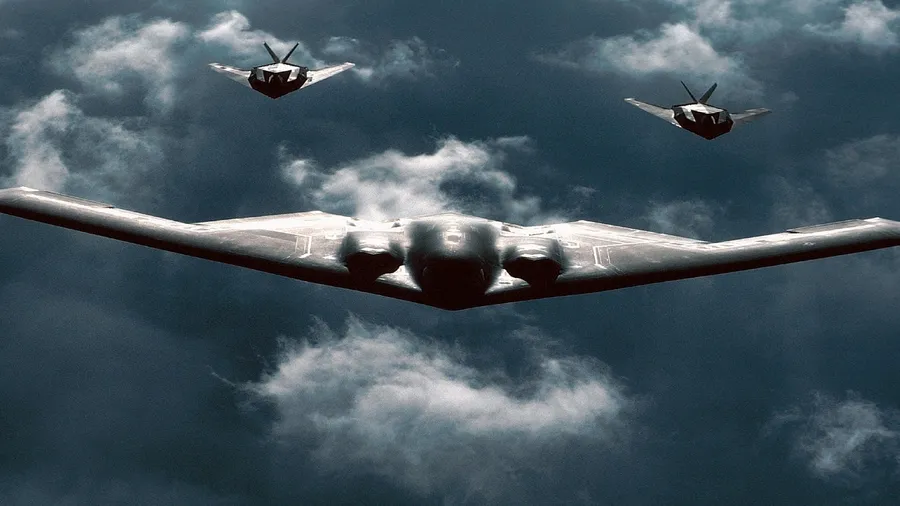
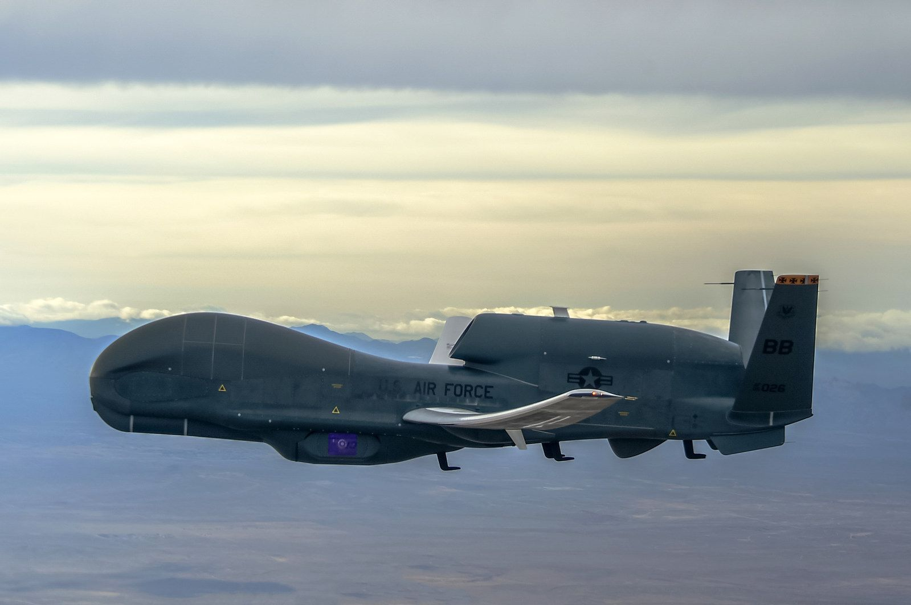
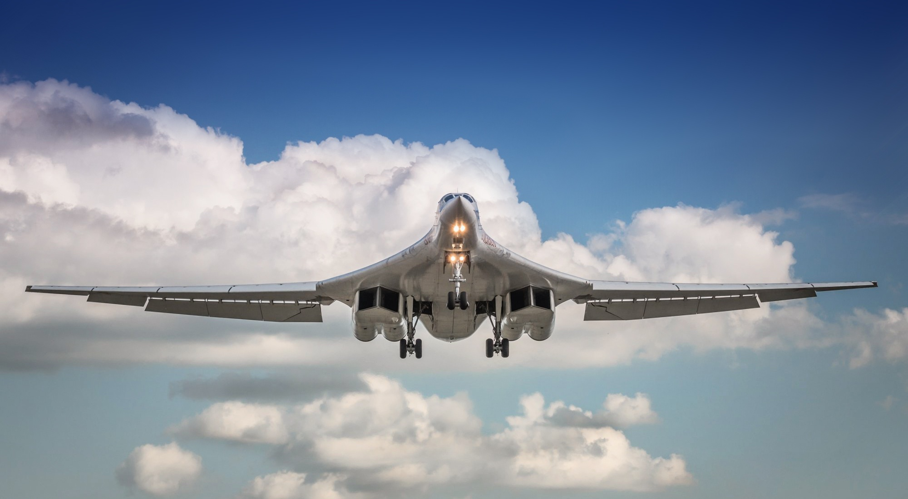

Instrumentasi di dalam Dunia Pertahanan Udara
Instrumentasi adalah bidang dalam fisika terapan yang berperan penting dalam pengukuran, pengawasan, dan pengendalian sistem. Dalam teknologi pertahanan udara, instrumentasi menjadi fondasi penting bagi navigasi, pengintaian, serta pengoperasian misi militer.
Secara sederhana, instrumentasi adalah “indera” dari pesawat. Seperti manusia butuh mata dan telinga untuk melihat dan mendengar, pesawat juga membutuhkan sensor untuk mendeteksi posisi, ketinggian, kecepatan, suhu mesin, tekanan kabin, hingga deteksi radar lawan.
Dalam B-2 Spirit, instrumentasi membantu mempertahankan siluman (stealth) melalui pengukuran bentuk gelombang radar dan suhu permukaan. RQ-4 Global Hawk mengandalkan sistem instrumentasi untuk melakukan pengawasan otomatis selama berjam-jam tanpa awak. Sedangkan Tu-160 menggunakan sistem radar presisi tinggi dan kontrol mesin supersonik yang dikendalikan lewat sistem elektronik terintegrasi.
Fisika hadir di balik setiap komponen: hukum gerak Newton mengatur sistem navigasi inersia, sensor inframerah menggunakan prinsip radiasi benda hitam, dan pengukuran kecepatan udara memanfaatkan efek tekanan (pitot tube). Inilah bukti bahwa instrumentasi bukan sekadar teknologi tapi jantung dari setiap misi pertahanan modern.
Pesawat-Pesawat Legendaris

B-2 Spirit
Performa:
- Kecepatan: Mach 0.95 (~1.010 km/jam)
- Jangkauan: ~11.000 km
- Ketinggian: 15.000 m
- Awak: 2 orang
- Stealth: Sangat rendah
Rekam Jejak Keberhasilan:
>130 misi di Kosovo. Efektivitas 90% tanpa terdeteksi. Misi nonstop 44 jam dari AS. Keberhasilan misi: Operasi Allied Force, Operation Iraqi Freedom.

RQ-4 Global Hawk
Performa:
- Kecepatan: ~630 km/jam
- Ketinggian: 18.000 meter
- Jangkauan: ~22.000 km
- Lama Terbang: 34 jam
- Awak: Tanpa awak
Rekam Jejak Keberhasilan:
>320.000 jam misi intelijen. Efektif mendeteksi musuh dari ketinggian tanpa terlihat. Keberhasilan misi: ISR di Afghanistan, Irak, dan Ukraina.

Tupolev-160
Performa:
- Kecepatan: Mach 2.05 (~2.200 km/jam)
- Jangkauan: ~12.300 km
- Muatan: 40.000 kg senjata
- Mesin: 4 turbofan
- Ketinggian: 16.000 m
- Awak: 4 orang
Rekam Jejak Keberhasilan:
Digunakan di Suriah. Menyelesaikan misi dengan rudal jelajah Kh-101 dari Rusia ke Timur Tengah. Keberhasilan misi: Operasi udara di Suriah & latihan global Rusia.
Identitas Pembuat
Nama: Luxman Insanul Kamil
NIM: 11220970000026
Program Studi: Fisika-Instrumentasi
Kampus: UIN Syarif Hidayatullah Jakarta